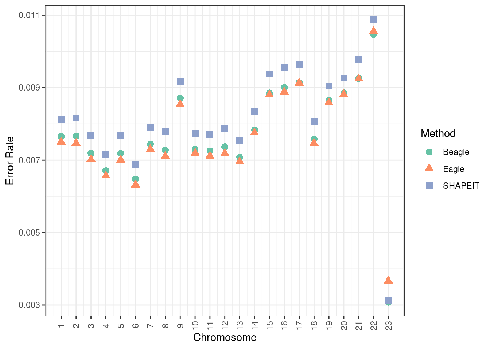
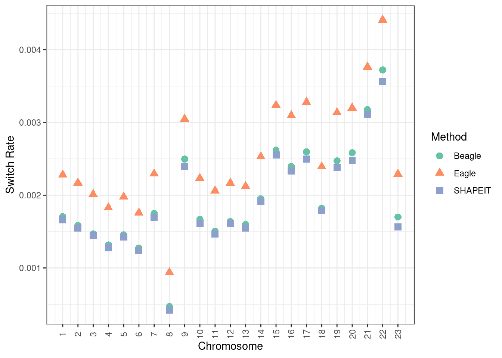
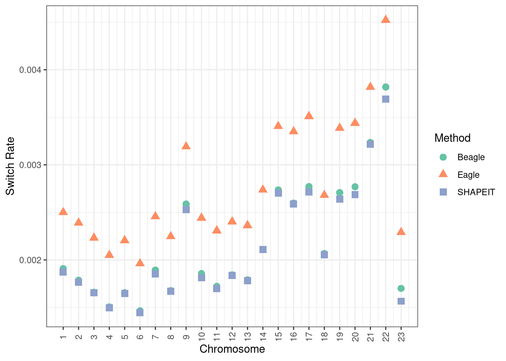
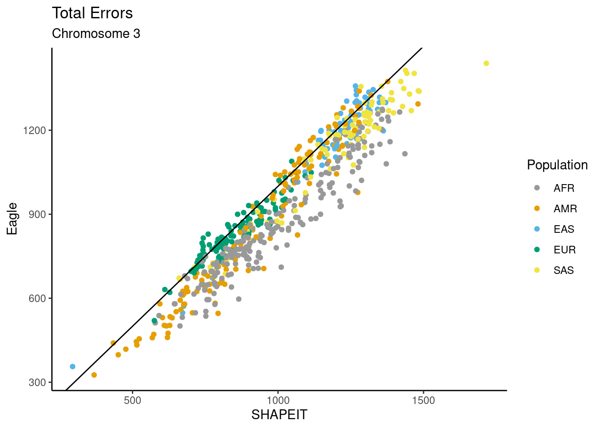
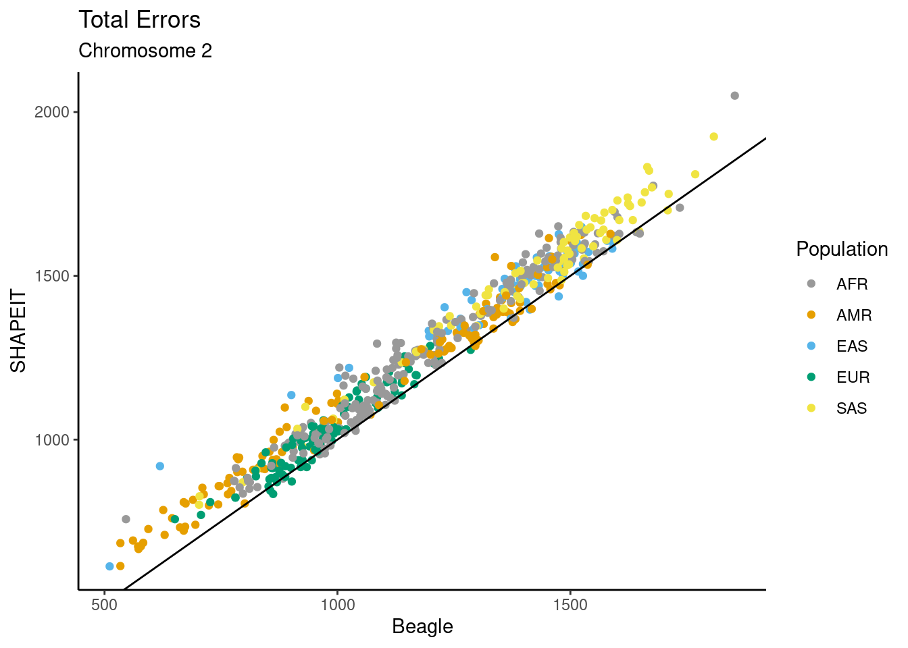
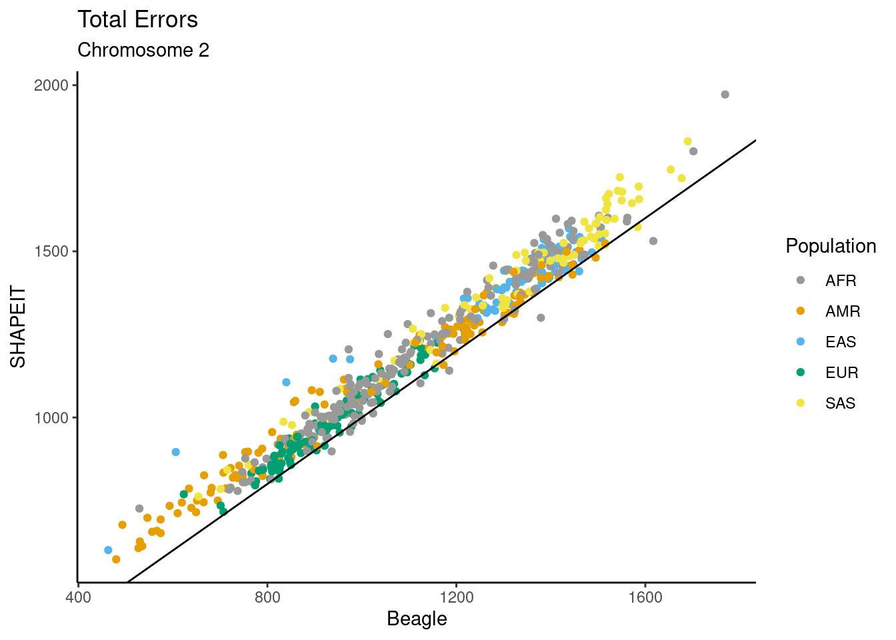

trio_phasing_results
Andy Beck
2024-05-20
Last updated: 2025-06-16
Checks: 7 0
Knit directory: phasing_clean/
This reproducible R Markdown analysis was created with workflowr (version 1.7.1). The Checks tab describes the reproducibility checks that were applied when the results were created. The Past versions tab lists the development history.
Great! Since the R Markdown file has been committed to the Git repository, you know the exact version of the code that produced these results.
Great job! The global environment was empty. Objects defined in the global environment can affect the analysis in your R Markdown file in unknown ways. For reproduciblity it’s best to always run the code in an empty environment.
The command set.seed(20240501) was run prior to running
the code in the R Markdown file. Setting a seed ensures that any results
that rely on randomness, e.g. subsampling or permutations, are
reproducible.
Great job! Recording the operating system, R version, and package versions is critical for reproducibility.
Nice! There were no cached chunks for this analysis, so you can be confident that you successfully produced the results during this run.
Great job! Using relative paths to the files within your workflowr project makes it easier to run your code on other machines.
Great! You are using Git for version control. Tracking code development and connecting the code version to the results is critical for reproducibility.
The results in this page were generated with repository version 30fd1bc. See the Past versions tab to see a history of the changes made to the R Markdown and HTML files.
Note that you need to be careful to ensure that all relevant files for
the analysis have been committed to Git prior to generating the results
(you can use wflow_publish or
wflow_git_commit). workflowr only checks the R Markdown
file, but you know if there are other scripts or data files that it
depends on. Below is the status of the Git repository when the results
were generated:
Ignored files:
Ignored: .Rhistory
Ignored: .Rproj.user/
Ignored: .ipynb_checkpoints/
Ignored: analysis/figure/
Ignored: data/1kgp/chr1/
Ignored: data/1kgp/chr10/
Ignored: data/1kgp/chr11/
Ignored: data/1kgp/chr12/
Ignored: data/1kgp/chr13/
Ignored: data/1kgp/chr14/
Ignored: data/1kgp/chr15/
Ignored: data/1kgp/chr16/
Ignored: data/1kgp/chr17/
Ignored: data/1kgp/chr18/
Ignored: data/1kgp/chr19/
Ignored: data/1kgp/chr2/
Ignored: data/1kgp/chr20/
Ignored: data/1kgp/chr21/
Ignored: data/1kgp/chr22/
Ignored: data/1kgp/chr3/
Ignored: data/1kgp/chr4/
Ignored: data/1kgp/chr5/
Ignored: data/1kgp/chr6/
Ignored: data/1kgp/chr7/
Ignored: data/1kgp/chr8/
Ignored: data/1kgp/chr9/
Ignored: data/1kgp/exclude_samples/
Ignored: data/chr1.1kb.sorted.bed
Ignored: data/chr1.fasta
Ignored: data/chr1.fasta.fai
Ignored: data/chr1.sizes
Ignored: data/chr10.1kb.sorted.bed
Ignored: data/chr10.fasta
Ignored: data/chr10.fasta.fai
Ignored: data/chr10.sizes
Ignored: data/chr10_10k.bed
Ignored: data/chr10_gc1kb.bed
Ignored: data/chr10_gc1kb_noMask.bed
Ignored: data/chr10_gc1kb_pilot.bed
Ignored: data/chr10_mask.fasta
Ignored: data/chr10_mask.fasta.fai
Ignored: data/chr11.1kb.sorted.bed
Ignored: data/chr11.fasta
Ignored: data/chr11.fasta.fai
Ignored: data/chr11.sizes
Ignored: data/chr11_10k.bed
Ignored: data/chr11_gc1kb.bed
Ignored: data/chr11_gc1kb_noMask.bed
Ignored: data/chr11_gc1kb_pilot.bed
Ignored: data/chr11_mask.fasta
Ignored: data/chr11_mask.fasta.fai
Ignored: data/chr12.1kb.sorted.bed
Ignored: data/chr12.fasta
Ignored: data/chr12.fasta.fai
Ignored: data/chr12.sizes
Ignored: data/chr12_10k.bed
Ignored: data/chr12_gc1kb.bed
Ignored: data/chr12_gc1kb_noMask.bed
Ignored: data/chr12_gc1kb_pilot.bed
Ignored: data/chr12_mask.fasta
Ignored: data/chr12_mask.fasta.fai
Ignored: data/chr13.1kb.sorted.bed
Ignored: data/chr13.fasta
Ignored: data/chr13.fasta.fai
Ignored: data/chr13.sizes
Ignored: data/chr13_10k.bed
Ignored: data/chr13_gc1kb.bed
Ignored: data/chr13_gc1kb_noMask.bed
Ignored: data/chr13_gc1kb_pilot.bed
Ignored: data/chr13_mask.fasta
Ignored: data/chr13_mask.fasta.fai
Ignored: data/chr14.1kb.sorted.bed
Ignored: data/chr14.fasta
Ignored: data/chr14.fasta.fai
Ignored: data/chr14.sizes
Ignored: data/chr14_10k.bed
Ignored: data/chr14_gc1kb.bed
Ignored: data/chr14_gc1kb_noMask.bed
Ignored: data/chr14_gc1kb_pilot.bed
Ignored: data/chr14_mask.fasta
Ignored: data/chr14_mask.fasta.fai
Ignored: data/chr15.1kb.sorted.bed
Ignored: data/chr15.fasta
Ignored: data/chr15.fasta.fai
Ignored: data/chr15.sizes
Ignored: data/chr15_10k.bed
Ignored: data/chr15_gc1kb.bed
Ignored: data/chr15_gc1kb_noMask.bed
Ignored: data/chr15_gc1kb_pilot.bed
Ignored: data/chr15_mask.fasta
Ignored: data/chr15_mask.fasta.fai
Ignored: data/chr16.1kb.sorted.bed
Ignored: data/chr16.fasta
Ignored: data/chr16.fasta.fai
Ignored: data/chr16.sizes
Ignored: data/chr16_10k.bed
Ignored: data/chr16_gc1kb.bed
Ignored: data/chr16_gc1kb_noMask.bed
Ignored: data/chr16_gc1kb_pilot.bed
Ignored: data/chr16_mask.fasta
Ignored: data/chr16_mask.fasta.fai
Ignored: data/chr17.1kb.sorted.bed
Ignored: data/chr17.fasta
Ignored: data/chr17.fasta.fai
Ignored: data/chr17.sizes
Ignored: data/chr17_10k.bed
Ignored: data/chr17_gc1kb.bed
Ignored: data/chr17_gc1kb_noMask.bed
Ignored: data/chr17_gc1kb_pilot.bed
Ignored: data/chr17_mask.fasta
Ignored: data/chr17_mask.fasta.fai
Ignored: data/chr18.1kb.sorted.bed
Ignored: data/chr18.fasta
Ignored: data/chr18.fasta.fai
Ignored: data/chr18.sizes
Ignored: data/chr18_10k.bed
Ignored: data/chr18_gc1kb.bed
Ignored: data/chr18_gc1kb_noMask.bed
Ignored: data/chr18_gc1kb_pilot.bed
Ignored: data/chr18_mask.fasta
Ignored: data/chr18_mask.fasta.fai
Ignored: data/chr19.1kb.sorted.bed
Ignored: data/chr19.fasta
Ignored: data/chr19.fasta.fai
Ignored: data/chr19.sizes
Ignored: data/chr19_10k.bed
Ignored: data/chr19_gc1kb.bed
Ignored: data/chr19_gc1kb_noMask.bed
Ignored: data/chr19_gc1kb_pilot.bed
Ignored: data/chr19_mask.fasta
Ignored: data/chr19_mask.fasta.fai
Ignored: data/chr1_10k.bed
Ignored: data/chr1_gc1kb.bed
Ignored: data/chr1_gc1kb_noMask.bed
Ignored: data/chr1_gc1kb_pilot.bed
Ignored: data/chr1_mask.fasta
Ignored: data/chr1_mask.fasta.fai
Ignored: data/chr2.1kb.sorted.bed
Ignored: data/chr2.fasta
Ignored: data/chr2.fasta.fai
Ignored: data/chr2.sizes
Ignored: data/chr20.1kb.sorted.bed
Ignored: data/chr20.fasta
Ignored: data/chr20.fasta.fai
Ignored: data/chr20.sizes
Ignored: data/chr20_10k.bed
Ignored: data/chr20_gc1kb.bed
Ignored: data/chr20_gc1kb_noMask.bed
Ignored: data/chr20_gc1kb_pilot.bed
Ignored: data/chr20_mask.fasta
Ignored: data/chr20_mask.fasta.fai
Ignored: data/chr21.1kb.sorted.bed
Ignored: data/chr21.fasta
Ignored: data/chr21.fasta.fai
Ignored: data/chr21.sizes
Ignored: data/chr21_10k.bed
Ignored: data/chr21_gc1kb.bed
Ignored: data/chr21_gc1kb_noMask.bed
Ignored: data/chr21_gc1kb_pilot.bed
Ignored: data/chr21_mask.fasta
Ignored: data/chr21_mask.fasta.fai
Ignored: data/chr22.1kb.sorted.bed
Ignored: data/chr22.fasta
Ignored: data/chr22.fasta.fai
Ignored: data/chr22.sizes
Ignored: data/chr22_10k.bed
Ignored: data/chr22_gc1kb.bed
Ignored: data/chr22_gc1kb_noMask.bed
Ignored: data/chr22_gc1kb_pilot.bed
Ignored: data/chr22_mask.fasta
Ignored: data/chr22_mask.fasta.fai
Ignored: data/chr22_mask.fasta.fxi
Ignored: data/chr2_10k.bed
Ignored: data/chr2_gc1kb.bed
Ignored: data/chr2_gc1kb_noMask.bed
Ignored: data/chr2_gc1kb_pilot.bed
Ignored: data/chr2_mask.fasta
Ignored: data/chr2_mask.fasta.fai
Ignored: data/chr3.1kb.sorted.bed
Ignored: data/chr3.fasta
Ignored: data/chr3.fasta.fai
Ignored: data/chr3.sizes
Ignored: data/chr3_10k.bed
Ignored: data/chr3_gc1kb.bed
Ignored: data/chr3_gc1kb_noMask.bed
Ignored: data/chr3_gc1kb_pilot.bed
Ignored: data/chr3_mask.fasta
Ignored: data/chr3_mask.fasta.fai
Ignored: data/chr4.1kb.sorted.bed
Ignored: data/chr4.fasta
Ignored: data/chr4.fasta.fai
Ignored: data/chr4.sizes
Ignored: data/chr4_10k.bed
Ignored: data/chr4_gc1kb.bed
Ignored: data/chr4_gc1kb_noMask.bed
Ignored: data/chr4_gc1kb_pilot.bed
Ignored: data/chr4_mask.fasta
Ignored: data/chr4_mask.fasta.fai
Ignored: data/chr5.1kb.sorted.bed
Ignored: data/chr5.fasta
Ignored: data/chr5.fasta.fai
Ignored: data/chr5.sizes
Ignored: data/chr5_10k.bed
Ignored: data/chr5_gc1kb.bed
Ignored: data/chr5_gc1kb_noMask.bed
Ignored: data/chr5_gc1kb_pilot.bed
Ignored: data/chr5_mask.fasta
Ignored: data/chr5_mask.fasta.fai
Ignored: data/chr6.1kb.sorted.bed
Ignored: data/chr6.fasta
Ignored: data/chr6.fasta.fai
Ignored: data/chr6.sizes
Ignored: data/chr6_10k.bed
Ignored: data/chr6_gc1kb.bed
Ignored: data/chr6_gc1kb_noMask.bed
Ignored: data/chr6_gc1kb_pilot.bed
Ignored: data/chr6_mask.fasta
Ignored: data/chr6_mask.fasta.fai
Ignored: data/chr7.1kb.sorted.bed
Ignored: data/chr7.fasta
Ignored: data/chr7.fasta.fai
Ignored: data/chr7.sizes
Ignored: data/chr7_10k.bed
Ignored: data/chr7_gc1kb.bed
Ignored: data/chr7_gc1kb_noMask.bed
Ignored: data/chr7_gc1kb_pilot.bed
Ignored: data/chr7_mask.fasta
Ignored: data/chr7_mask.fasta.fai
Ignored: data/chr8.1kb.sorted.bed
Ignored: data/chr8.fasta
Ignored: data/chr8.fasta.fai
Ignored: data/chr8.sizes
Ignored: data/chr8_10k.bed
Ignored: data/chr8_gc1kb.bed
Ignored: data/chr8_gc1kb_noMask.bed
Ignored: data/chr8_gc1kb_pilot.bed
Ignored: data/chr8_mask.fasta
Ignored: data/chr8_mask.fasta.fai
Ignored: data/chr9.1kb.sorted.bed
Ignored: data/chr9.fasta
Ignored: data/chr9.fasta.fai
Ignored: data/chr9.sizes
Ignored: data/chr9_10k.bed
Ignored: data/chr9_gc1kb.bed
Ignored: data/chr9_gc1kb_noMask.bed
Ignored: data/chr9_gc1kb_pilot.bed
Ignored: data/chr9_mask.fasta
Ignored: data/chr9_mask.fasta.fai
Ignored: data/chrX.1kb.sorted.bed
Ignored: data/chrX.fasta
Ignored: data/chrX.fasta.fai
Ignored: data/chrX.sizes
Ignored: data/chrX_gc1kb.bed
Ignored: data/chrX_gc1kb_pilot.bed
Ignored: data/chrX_mask.fasta
Ignored: data/chrX_mask.fasta.fai
Ignored: data/decode/
Ignored: data/hg38.chrom.sizes
Ignored: data/mask_pilot_10_fasta.bed
Ignored: data/mask_pilot_11_fasta.bed
Ignored: data/mask_pilot_12_fasta.bed
Ignored: data/mask_pilot_13_fasta.bed
Ignored: data/mask_pilot_14_fasta.bed
Ignored: data/mask_pilot_15_fasta.bed
Ignored: data/mask_pilot_16_fasta.bed
Ignored: data/mask_pilot_17_fasta.bed
Ignored: data/mask_pilot_18_fasta.bed
Ignored: data/mask_pilot_19_fasta.bed
Ignored: data/mask_pilot_1_fasta.bed
Ignored: data/mask_pilot_20_fasta.bed
Ignored: data/mask_pilot_21_fasta.bed
Ignored: data/mask_pilot_22_fasta.bed
Ignored: data/mask_pilot_2_fasta.bed
Ignored: data/mask_pilot_3_fasta.bed
Ignored: data/mask_pilot_4_fasta.bed
Ignored: data/mask_pilot_5_fasta.bed
Ignored: data/mask_pilot_6_fasta.bed
Ignored: data/mask_pilot_7_fasta.bed
Ignored: data/mask_pilot_8_fasta.bed
Ignored: data/mask_pilot_9_fasta.bed
Ignored: data/ref_GRCh38.fna
Ignored: data/ref_GRCh38.fna.fai
Ignored: data/ref_GRCh38.fna.in
Ignored: data/ref_maps/
Ignored: output/alt_ref/
Ignored: output/slurm/
Ignored: output/switch_errors/
Ignored: output/trio_phase_1/
Ignored: output/trio_phase_10/
Ignored: output/trio_phase_11/
Ignored: output/trio_phase_12/
Ignored: output/trio_phase_13/
Ignored: output/trio_phase_14/
Ignored: output/trio_phase_15/
Ignored: output/trio_phase_16/
Ignored: output/trio_phase_17/
Ignored: output/trio_phase_18/
Ignored: output/trio_phase_19/
Ignored: output/trio_phase_2/
Ignored: output/trio_phase_20/
Ignored: output/trio_phase_21/
Ignored: output/trio_phase_22/
Ignored: output/trio_phase_3/
Ignored: output/trio_phase_4/
Ignored: output/trio_phase_5/
Ignored: output/trio_phase_6/
Ignored: output/trio_phase_7/
Ignored: output/trio_phase_8/
Ignored: output/trio_phase_9/
Ignored: output/vote_1/
Ignored: output/vote_10/
Ignored: output/vote_11/
Ignored: output/vote_12/
Ignored: output/vote_13/
Ignored: output/vote_14/
Ignored: output/vote_15/
Ignored: output/vote_16/
Ignored: output/vote_17/
Ignored: output/vote_18/
Ignored: output/vote_19/
Ignored: output/vote_2/
Ignored: output/vote_20/
Ignored: output/vote_21/
Ignored: output/vote_22/
Ignored: output/vote_3/
Ignored: output/vote_4/
Ignored: output/vote_5/
Ignored: output/vote_6/
Ignored: output/vote_7/
Ignored: output/vote_8/
Ignored: output/vote_9/
Ignored: output/vote_x/
Ignored: scratch/
Untracked files:
Untracked: analysis/trio_rephase_noTH.Rmd
Unstaged changes:
Modified: README.md
Modified: analysis/gc_content.Rmd
Modified: analysis/synthetic_diploid_results.Rmd
Modified: code/batch_annotate_het.sh
Modified: code/batch_annotate_trio_switch.sh
Modified: code/batch_compare_noTH.sh
Modified: code/process_noTH.r
Note that any generated files, e.g. HTML, png, CSS, etc., are not included in this status report because it is ok for generated content to have uncommitted changes.
These are the previous versions of the repository in which changes were
made to the R Markdown (analysis/trio_phasing_results.Rmd)
and HTML (docs/trio_phasing_results.html) files. If you’ve
configured a remote Git repository (see ?wflow_git_remote),
click on the hyperlinks in the table below to view the files as they
were in that past version.
| File | Version | Author | Date | Message |
|---|---|---|---|---|
| Rmd | 30fd1bc | theandyb | 2025-06-16 | wflow_publish("analysis/trio_phasing_results.Rmd") |
| Rmd | f84ef9e | theandyb | 2025-05-06 | 6april25 |
| html | 1243aea | Andy Beck | 2024-07-03 | Build site. |
| Rmd | e302820 | Andy Beck | 2024-07-03 | wflow_publish("analysis/trio_phasing_results.Rmd") |
| html | 76e67f9 | Andy Beck | 2024-06-26 | Build site. |
| Rmd | 653a35b | Andy Beck | 2024-06-26 | wflow_publish(c("analysis/recombination_rate.Rmd", "analysis/trio_phasing_results.Rmd")) |
| Rmd | 3b84976 | Andy Beck | 2024-06-26 | wflow_git_commit(all = TRUE) |
| html | 292c663 | Andy Beck | 2024-06-13 | Build site. |
| Rmd | 78cfac3 | Andy Beck | 2024-06-13 | wflow_publish("analysis/trio_phasing_results.Rmd") |
| html | cb6aa66 | Andy Beck | 2024-06-06 | Build site. |
| Rmd | fccb083 | Andy Beck | 2024-06-06 | wflow_publish("analysis/trio_phasing_results.Rmd") |
| html | ef01021 | Andy Beck | 2024-06-06 | Build site. |
| html | f289c04 | Andy Beck | 2024-06-06 | Build site. |
| html | bd1d867 | Andy Beck | 2024-06-05 | Build site. |
| Rmd | 9d865f3 | Andy Beck | 2024-06-05 | wflow_publish("analysis/trio_phasing_results.Rmd") |
| html | ec0ba0b | Andy Beck | 2024-05-29 | Build site. |
| html | 9a4bd3e | Andy Beck | 2024-05-29 | Build site. |
| Rmd | 6dd2d47 | Andy Beck | 2024-05-29 | wflow_publish(c("analysis/trio_phasing_results.Rmd")) |
| html | cd54733 | Andy Beck | 2024-05-29 | Build site. |
| Rmd | e611ebe | Andy Beck | 2024-05-29 | wflow_publish(c("analysis/trio_phasing_results.Rmd")) |
| html | 34c040a | Andy Beck | 2024-05-29 | Build site. |
| Rmd | 5ba3e67 | Andy Beck | 2024-05-29 | wflow_publish("analysis/trio_phasing_results.Rmd") |
| html | 808cfb8 | Andy Beck | 2024-05-29 | Build site. |
| html | d6dca59 | Andy Beck | 2024-05-29 | Build site. |
| Rmd | f1bf0ba | Andy Beck | 2024-05-29 | wflow_publish(c("analysis/synthetic_diploid_results.Rmd", "analysis/trio_phasing_results.Rmd")) |
| html | 8041a90 | Andy Beck | 2024-05-29 | Build site. |
| Rmd | 0669558 | Andy Beck | 2024-05-29 | wflow_publish(c("analysis/synthetic_diploid_results.Rmd", "analysis/trio_phasing_results.Rmd")) |
| html | 17d41d5 | Andy Beck | 2024-05-22 | Build site. |
| Rmd | 3601740 | Andy Beck | 2024-05-22 | wflow_publish("analysis/trio_phasing_results.Rmd") |
| html | 4aa7b80 | Andy Beck | 2024-05-22 | Build site. |
| Rmd | 3bc45e1 | Andy Beck | 2024-05-22 | wflow_publish("analysis/trio_phasing_results.Rmd") |
| html | d7d8f5a | Andy Beck | 2024-05-22 | Build site. |
| Rmd | 0fdea9e | Andy Beck | 2024-05-22 | wflow_publish("analysis/trio_phasing_results.Rmd") |
| html | da672c2 | Andy Beck | 2024-05-22 | Build site. |
| Rmd | ab88699 | Andy Beck | 2024-05-22 | wflow_publish("analysis/trio_phasing_results.Rmd") |
| html | 4255fdf | Andy Beck | 2024-05-21 | Build site. |
| Rmd | 610b7e2 | Andy Beck | 2024-05-21 | wflow_publish("analysis/trio_phasing_results.Rmd") |
| html | 1f7bff3 | Andy Beck | 2024-05-21 | Build site. |
| Rmd | 2aa6265 | Andy Beck | 2024-05-21 | wflow_publish("analysis/trio_phasing_results.Rmd") |
| html | ddd4d13 | Andy Beck | 2024-05-21 | Build site. |
| Rmd | 51a14cf | Andy Beck | 2024-05-21 | wflow_publish("analysis/trio_phasing_results.Rmd") |
| html | 60c7dfc | Andy Beck | 2024-05-20 | Build site. |
| Rmd | 91a7ac8 | Andy Beck | 2024-05-20 | wflow_publish("analysis/trio_phasing_results.Rmd") |
| html | ac90be7 | Andy Beck | 2024-05-20 | Build site. |
| Rmd | fa87641 | Andy Beck | 2024-05-20 | wflow_publish("analysis/trio_phasing_results.Rmd") |
Introduction
Here in this document we present figures, tables, and statistics for the phasing evaluation on the autosomes. This sample consists of 602 individuals phased using a reference panel of unrelated individuals from the 1000 genomes project. The phasing results are compared to a pedigree-adjusted phased genome for each sample.
Libraries and Data
library(tidyverse)
library(pander)
library(reactable)
library(yaml)
library(gtsummary)
library(grid)
library(gridExtra)
config_obj <- yaml::read_yaml("_config.yaml")
cbPalette <- c("#999999", "#E69F00", "#56B4E9", "#009E73", "#F0E442", "#0072B2", "#D55E00", "#CC79A7")
df_subj <- read_csv("data/1kgp/subject_info.csv")
ped_df <- read_table("data/1kgp/1kGP.3202_samples.pedigree_info.txt")
child_ids <- ped_df %>% filter(fatherID != "0" & motherID != "0") %>% pull(sampleID)
unrel_ids <- scan("data/1kgp/unrelated_subjects.txt", what = character())
df_subj_rel <- df_subj %>%
filter(SAMPLE_NAME %in% child_ids)
df_subj_rel$id2 <- 1:602
df_subj_unrel <- df_subj %>%
filter(SAMPLE_NAME %in% unrel_ids)Switch Error Summaries
df_switch_trio <- vector(mode = "list", length = 22)
for(i in 1:22){
df_switch_trio[[i]] <- read_csv(paste0(config_obj$base_dir, "/output/trio_phase_", i, "/switch_errors/summary.csv"),
show_col_types = FALSE)
}Heterozygous Position Counts
# het dfs
df_het <- vector(mode = "list", length = 22)
for(i in 1:22){
df_het[[i]] <- read_tsv(paste0(config_obj$base_dir, "/output/trio_phase_", i, "/het_pos_count.tsv"),
col_names = c("id", "n_het"),
show_col_types = FALSE)
}deCODE genetic maps (cM/MB)
df_decode <- vector(mode = "list", length = 22)
for(i in 1:22){
df_decode[[i]] <- read_tsv(paste0("data/decode/chr", i, "_recomb.bed"), col_names = c("chr", "start", "end", "cM_MB"), show_col_types = FALSE)
}Chr X Results
We’ll also pull in the results on chromosome X for the synthetic diploids to allow for comparisons of rates between 15 and X.
sd_pair_info_df <- read_delim("data/sample_pairs.csv", col_names = c("POP", "ID1", "ID2"))Rows: 1000 Columns: 3
── Column specification ────────────────────────────────────────────────────────
Delimiter: ","
chr (3): POP, ID1, ID2
ℹ Use `spec()` to retrieve the full column specification for this data.
ℹ Specify the column types or set `show_col_types = FALSE` to quiet this message.sd_pair_info_df <- left_join(sd_pair_info_df, df_subj, by = c("ID1"="SAMPLE_NAME")) %>%
rename(SP = SUPER) %>%
select(-POPULATION)
df_switch_x <- read_csv(paste0(config_obj$base_dir,"/output/switch_errors/switch_errors/summary.csv"))Rows: 1000 Columns: 45
── Column specification ────────────────────────────────────────────────────────
Delimiter: ","
chr (2): pop, subpop
dbl (43): pair_id, n_switch_eagle, n_switch_beagle, n_switch_shapeit, n_flip...
ℹ Use `spec()` to retrieve the full column specification for this data.
ℹ Specify the column types or set `show_col_types = FALSE` to quiet this message.df_het_x <- read_tsv(paste0(config_obj$base_dir, "/output/switch_errors/het_pos_count.tsv"), col_names = c("id", "n_het"))Rows: 1000 Columns: 2
── Column specification ────────────────────────────────────────────────────────
Delimiter: "\t"
dbl (2): id, n_het
ℹ Use `spec()` to retrieve the full column specification for this data.
ℹ Specify the column types or set `show_col_types = FALSE` to quiet this message.n_var_site_x <- 1722954
df_het_x$frac_het <- df_het_x$n_het / n_var_site_x
sd_pair_info_df$n_het <-df_het_x$n_het
sd_pair_info_df$frac_het <-df_het_x$frac_het
df_decode_x <- read_tsv("data/decode/chrX_recomb.bed", col_names = c("chr", "start", "end", "cM_MB"))Rows: 23976 Columns: 4
── Column specification ────────────────────────────────────────────────────────
Delimiter: "\t"
chr (1): chr
dbl (3): start, end, cM_MB
ℹ Use `spec()` to retrieve the full column specification for this data.
ℹ Specify the column types or set `show_col_types = FALSE` to quiet this message.Subject Information
The 1000 Genomes collection of 3,202 genomes is sampled from 26 different populations, each belonging to 1 of 5 distinct super-populations (AFR, AMR, EAS, EUR, SAS). All 26 populations are represented in the 2,504 1kGP phase 3 subjects, but not all are present in the 602 trios sequenced by the New York Genome Center:
df_subj %>%
group_by(SUPER, POPULATION) %>%
summarize(N = n()) %>%
reactable(
groupBy = c("SUPER"),
columns = list(
N = colDef(aggregate = "sum")),
bordered = TRUE,
defaultExpanded = TRUE)`summarise()` has grouped output by 'SUPER'. You can override using the
`.groups` argument.df_subj_rel %>%
group_by(SUPER, POPULATION) %>%
summarize(N = n()) %>%
reactable(
groupBy = c("SUPER"),
columns = list(
N = colDef(aggregate = "sum")),
bordered = TRUE,
defaultExpanded = TRUE)`summarise()` has grouped output by 'SUPER'. You can override using the
`.groups` argument.df_subj_unrel %>%
group_by(SUPER, POPULATION) %>%
summarize(N = n()) %>%
reactable(
groupBy = c("SUPER"),
columns = list(
N = colDef(aggregate = "sum")),
bordered = TRUE,
defaultExpanded = TRUE)`summarise()` has grouped output by 'SUPER'. You can override using the
`.groups` argument.For completeness, we also tabulate other summary information about the 602 trios (which is just sex; 1 - male, 2 - female):
df_subj_rel %>%
group_by(sex) %>%
summarize(N = n()) %>%
reactable(
groupBy = c("sex"),
columns = list(
N = colDef(aggregate = "sum")),
bordered = TRUE,
defaultExpanded = TRUE)df_subj_unrel %>%
group_by(sex) %>%
summarize(N = n()) %>%
reactable(
groupBy = c("sex"),
columns = list(
N = colDef(aggregate = "sum")),
bordered = TRUE,
defaultExpanded = TRUE)All Autosome Summaries
Total Errors
First let’s get an overall error rate across all 22 autsomes based on our re-phasing of the trio probands:
df_total <- df_switch_trio[[1]] %>%
mutate(Eagle = (n_other_eagle + n_flip_eagle) / n_hets,
Beagle = (n_other_beagle + n_flip_beagle) / n_hets,
SHAPEIT = (n_other_shapeit + n_flip_shapeit) / n_hets) %>%
select(Eagle, Beagle, SHAPEIT, SUPER) %>%
mutate(chrom = 1)
for(i in 2:22){
df_total <- bind_rows(df_total,
{
df_switch_trio[[i]] %>%
mutate(Eagle = (n_other_eagle + n_flip_eagle) / n_hets,
Beagle = (n_other_beagle + n_flip_beagle) / n_hets,
SHAPEIT = (n_other_shapeit + n_flip_shapeit) / n_hets) %>%
select(Eagle, Beagle, SHAPEIT, SUPER) %>%
mutate(chrom = i)
})
}
df_total <- df_total %>%
bind_rows(df_total, {df_switch_x %>%
mutate(Eagle = (n_other_eagle + n_flip_eagle) / n_hets,
Beagle = (n_other_beagle + n_flip_beagle) / n_hets,
SHAPEIT = (n_other_shapeit + n_flip_shapeit) / n_hets) %>%
rename(SUPER = pop) %>%
select(Eagle, Beagle, SHAPEIT, SUPER) %>%
mutate(chrom = 23)})
df_total %>%
group_by(chrom) %>%
summarise(Beagle = mean(Beagle),
Eagle = mean(Eagle),
SHAPEIT = mean(SHAPEIT)) %>%
knitr::kable()| chrom | Beagle | Eagle | SHAPEIT |
|---|---|---|---|
| 1 | 0.0067395 | 0.0067223 | 0.0071348 |
| 2 | 0.0067182 | 0.0066709 | 0.0071241 |
| 3 | 0.0062862 | 0.0062368 | 0.0066700 |
| 4 | 0.0058272 | 0.0058086 | 0.0061830 |
| 5 | 0.0062772 | 0.0062116 | 0.0066640 |
| 6 | 0.0056205 | 0.0056106 | 0.0059695 |
| 7 | 0.0066393 | 0.0066393 | 0.0070154 |
| 8 | 0.0016641 | 0.0022814 | 0.0017729 |
| 9 | 0.0079744 | 0.0079202 | 0.0083190 |
| 10 | 0.0064289 | 0.0064593 | 0.0068026 |
| 11 | 0.0063130 | 0.0062888 | 0.0066795 |
| 12 | 0.0064543 | 0.0064011 | 0.0068462 |
| 13 | 0.0062073 | 0.0061843 | 0.0065682 |
| 14 | 0.0069985 | 0.0070401 | 0.0074116 |
| 15 | 0.0080919 | 0.0081443 | 0.0085070 |
| 16 | 0.0080883 | 0.0081102 | 0.0085211 |
| 17 | 0.0082995 | 0.0083780 | 0.0086566 |
| 18 | 0.0066549 | 0.0066279 | 0.0070294 |
| 19 | 0.0077290 | 0.0078272 | 0.0080524 |
| 20 | 0.0080189 | 0.0080409 | 0.0083343 |
| 21 | 0.0086549 | 0.0088189 | 0.0090797 |
| 22 | 0.0098210 | 0.0100373 | 0.0101722 |
| 23 | 0.0030794 | 0.0036645 | 0.0031251 |
df_total %>%
group_by(chrom, SUPER) %>%
summarise(Beagle = mean(Beagle),
Eagle = mean(Eagle),
SHAPEIT = mean(SHAPEIT)) %>%
knitr::kable()`summarise()` has grouped output by 'chrom'. You can override using the
`.groups` argument.| chrom | SUPER | Beagle | Eagle | SHAPEIT |
|---|---|---|---|---|
| 1 | AFR | 0.0055470 | 0.0052014 | 0.0058600 |
| 1 | AMR | 0.0064375 | 0.0065297 | 0.0068945 |
| 1 | EAS | 0.0092799 | 0.0096876 | 0.0097752 |
| 1 | EUR | 0.0062678 | 0.0063948 | 0.0065600 |
| 1 | SAS | 0.0084880 | 0.0085297 | 0.0090237 |
| 2 | AFR | 0.0054907 | 0.0051472 | 0.0058282 |
| 2 | AMR | 0.0066014 | 0.0066504 | 0.0070537 |
| 2 | EAS | 0.0092474 | 0.0095998 | 0.0098008 |
| 2 | EUR | 0.0060698 | 0.0061718 | 0.0063560 |
| 2 | SAS | 0.0084829 | 0.0084545 | 0.0090015 |
| 3 | AFR | 0.0051191 | 0.0047501 | 0.0054396 |
| 3 | AMR | 0.0060628 | 0.0061345 | 0.0065287 |
| 3 | EAS | 0.0087136 | 0.0090203 | 0.0091782 |
| 3 | EUR | 0.0058531 | 0.0059451 | 0.0060974 |
| 3 | SAS | 0.0078949 | 0.0079269 | 0.0084038 |
| 4 | AFR | 0.0047064 | 0.0043872 | 0.0049933 |
| 4 | AMR | 0.0058144 | 0.0058702 | 0.0062470 |
| 4 | EAS | 0.0078453 | 0.0082126 | 0.0082989 |
| 4 | EUR | 0.0053370 | 0.0054733 | 0.0055894 |
| 4 | SAS | 0.0074061 | 0.0074566 | 0.0078482 |
| 5 | AFR | 0.0051628 | 0.0047968 | 0.0055004 |
| 5 | AMR | 0.0060247 | 0.0060731 | 0.0064754 |
| 5 | EAS | 0.0086690 | 0.0089300 | 0.0091428 |
| 5 | EUR | 0.0057598 | 0.0058361 | 0.0060024 |
| 5 | SAS | 0.0079450 | 0.0079505 | 0.0084528 |
| 6 | AFR | 0.0046691 | 0.0044083 | 0.0049870 |
| 6 | AMR | 0.0054834 | 0.0055737 | 0.0058509 |
| 6 | EAS | 0.0076252 | 0.0079459 | 0.0080756 |
| 6 | EUR | 0.0050195 | 0.0050966 | 0.0052602 |
| 6 | SAS | 0.0071493 | 0.0071820 | 0.0075932 |
| 7 | AFR | 0.0056451 | 0.0053659 | 0.0059259 |
| 7 | AMR | 0.0063283 | 0.0064342 | 0.0068119 |
| 7 | EAS | 0.0089896 | 0.0092754 | 0.0094416 |
| 7 | EUR | 0.0060407 | 0.0061856 | 0.0062962 |
| 7 | SAS | 0.0082539 | 0.0083194 | 0.0087699 |
| 8 | AFR | 0.0017555 | 0.0020756 | 0.0018302 |
| 8 | AMR | 0.0023261 | 0.0029894 | 0.0024296 |
| 8 | EAS | 0.0007489 | 0.0019593 | 0.0007036 |
| 8 | EUR | 0.0010778 | 0.0018212 | 0.0011804 |
| 8 | SAS | 0.0018944 | 0.0024787 | 0.0022310 |
| 9 | AFR | 0.0068396 | 0.0064942 | 0.0071230 |
| 9 | AMR | 0.0075185 | 0.0075597 | 0.0079218 |
| 9 | EAS | 0.0107378 | 0.0110860 | 0.0111549 |
| 9 | EUR | 0.0074135 | 0.0075191 | 0.0076602 |
| 9 | SAS | 0.0097581 | 0.0096966 | 0.0102146 |
| 10 | AFR | 0.0053702 | 0.0051045 | 0.0056988 |
| 10 | AMR | 0.0061843 | 0.0063284 | 0.0065907 |
| 10 | EAS | 0.0086799 | 0.0090581 | 0.0091298 |
| 10 | EUR | 0.0058815 | 0.0060049 | 0.0061312 |
| 10 | SAS | 0.0081091 | 0.0082448 | 0.0086279 |
| 11 | AFR | 0.0051038 | 0.0047643 | 0.0054421 |
| 11 | AMR | 0.0061504 | 0.0062567 | 0.0065811 |
| 11 | EAS | 0.0087048 | 0.0089563 | 0.0091293 |
| 11 | EUR | 0.0057273 | 0.0058646 | 0.0059475 |
| 11 | SAS | 0.0081458 | 0.0082203 | 0.0086106 |
| 12 | AFR | 0.0052336 | 0.0048435 | 0.0055285 |
| 12 | AMR | 0.0061647 | 0.0062722 | 0.0066160 |
| 12 | EAS | 0.0088507 | 0.0091833 | 0.0092980 |
| 12 | EUR | 0.0058802 | 0.0059865 | 0.0061495 |
| 12 | SAS | 0.0085005 | 0.0084572 | 0.0091331 |
| 13 | AFR | 0.0051338 | 0.0047588 | 0.0054669 |
| 13 | AMR | 0.0058467 | 0.0059489 | 0.0062847 |
| 13 | EAS | 0.0086166 | 0.0089850 | 0.0089645 |
| 13 | EUR | 0.0056813 | 0.0058049 | 0.0059074 |
| 13 | SAS | 0.0079485 | 0.0080400 | 0.0084311 |
| 14 | AFR | 0.0058491 | 0.0055279 | 0.0061819 |
| 14 | AMR | 0.0069236 | 0.0070836 | 0.0073920 |
| 14 | EAS | 0.0092338 | 0.0097126 | 0.0097585 |
| 14 | EUR | 0.0063719 | 0.0065804 | 0.0066770 |
| 14 | SAS | 0.0087328 | 0.0088611 | 0.0092879 |
| 15 | AFR | 0.0069205 | 0.0067038 | 0.0072805 |
| 15 | AMR | 0.0075491 | 0.0076851 | 0.0080371 |
| 15 | EAS | 0.0107938 | 0.0112109 | 0.0112988 |
| 15 | EUR | 0.0075873 | 0.0077744 | 0.0078511 |
| 15 | SAS | 0.0100833 | 0.0101590 | 0.0106255 |
| 16 | AFR | 0.0067101 | 0.0064605 | 0.0070518 |
| 16 | AMR | 0.0077841 | 0.0078624 | 0.0082867 |
| 16 | EAS | 0.0110409 | 0.0114166 | 0.0115555 |
| 16 | EUR | 0.0074827 | 0.0076739 | 0.0078211 |
| 16 | SAS | 0.0100990 | 0.0101592 | 0.0106840 |
| 17 | AFR | 0.0070385 | 0.0068052 | 0.0073412 |
| 17 | AMR | 0.0078579 | 0.0080042 | 0.0082180 |
| 17 | EAS | 0.0114246 | 0.0118422 | 0.0119096 |
| 17 | EUR | 0.0075552 | 0.0077852 | 0.0078145 |
| 17 | SAS | 0.0102826 | 0.0105113 | 0.0107783 |
| 18 | AFR | 0.0053748 | 0.0050216 | 0.0056865 |
| 18 | AMR | 0.0064686 | 0.0065122 | 0.0068916 |
| 18 | EAS | 0.0092433 | 0.0096255 | 0.0096967 |
| 18 | EUR | 0.0061722 | 0.0063152 | 0.0063982 |
| 18 | SAS | 0.0083972 | 0.0084671 | 0.0089623 |
| 19 | AFR | 0.0065154 | 0.0064078 | 0.0067781 |
| 19 | AMR | 0.0073463 | 0.0075642 | 0.0077633 |
| 19 | EAS | 0.0107155 | 0.0110315 | 0.0110440 |
| 19 | EUR | 0.0070417 | 0.0072541 | 0.0072739 |
| 19 | SAS | 0.0095512 | 0.0096150 | 0.0099775 |
| 20 | AFR | 0.0064384 | 0.0061886 | 0.0066430 |
| 20 | AMR | 0.0078739 | 0.0079705 | 0.0082688 |
| 20 | EAS | 0.0114298 | 0.0117419 | 0.0118613 |
| 20 | EUR | 0.0072520 | 0.0074422 | 0.0075192 |
| 20 | SAS | 0.0100663 | 0.0101533 | 0.0104775 |
| 21 | AFR | 0.0079544 | 0.0078804 | 0.0083141 |
| 21 | AMR | 0.0082498 | 0.0085883 | 0.0088090 |
| 21 | EAS | 0.0106827 | 0.0110631 | 0.0110567 |
| 21 | EUR | 0.0079347 | 0.0081427 | 0.0082329 |
| 21 | SAS | 0.0101535 | 0.0103601 | 0.0107176 |
| 22 | AFR | 0.0087059 | 0.0086329 | 0.0089909 |
| 22 | AMR | 0.0094276 | 0.0097295 | 0.0097832 |
| 22 | EAS | 0.0126112 | 0.0132342 | 0.0130122 |
| 22 | EUR | 0.0090470 | 0.0093067 | 0.0093290 |
| 22 | SAS | 0.0117030 | 0.0120662 | 0.0122487 |
| 23 | AFR | 0.0018961 | 0.0023549 | 0.0019652 |
| 23 | AMR | 0.0023216 | 0.0027562 | 0.0024143 |
| 23 | EAS | 0.0047907 | 0.0056040 | 0.0047650 |
| 23 | EUR | 0.0027532 | 0.0032940 | 0.0028181 |
| 23 | SAS | 0.0036354 | 0.0043134 | 0.0036627 |
df_total %>%
group_by(chrom) %>%
summarise(Beagle = mean(Beagle),
Eagle = mean(Eagle),
SHAPEIT = mean(SHAPEIT)) %>%
pivot_longer(Beagle:SHAPEIT, names_to = "method", values_to = "error_rate") %>%
ggplot(aes(x = chrom, y = error_rate, colour = method, shape = method)) +
geom_point() +
theme_bw() +
xlab("Chromosome") +
ylab("Error Rate")
df_total %>%
group_by(chrom, SUPER) %>%
summarise(Beagle = mean(Beagle),
Eagle = mean(Eagle),
SHAPEIT = mean(SHAPEIT)) %>%
pivot_longer(Beagle:SHAPEIT, names_to = "method", values_to = "error_rate") %>%
ggplot(aes(x = chrom, y = error_rate, colour = SUPER, shape = method)) +
geom_point() +
theme_bw() +
ylab("Error Rate") +
xlab("Chromosome") +
labs(colour = "Population", shape = "Method")`summarise()` has grouped output by 'chrom'. You can override using the
`.groups` argument.
Switch Errors
Total Errors
cross_meth_plot <- function(df, p_title, p_func, pop, chrom="15") {
p1 <- p_func(df, "Beagle", "SHAPEIT", pop, chrom = chrom)
p_legend <- cowplot::get_legend(p1)
p1 <- p1 + guides(colour="none") + ggtitle(p_title, paste0("Chromosome ", chrom))
p2 <- p_func(df, "Beagle", "Eagle", pop, chrom = chrom) +
guides(colour="none") + ggtitle("", "")
p3 <- p_func(df, "SHAPEIT", "Eagle", pop, chrom = chrom) +
guides(colour="none") + ggtitle("", "")
return(grid.arrange(p1, p_legend, p2, p3, ncol = 2))
}
plot_total_errors <- function(df, m1, m2, pop, chrom="15"){
p <- df %>%
mutate(Beagle = (n_other_beagle + n_flip_beagle),
Eagle = (n_other_eagle + n_flip_eagle),
SHAPEIT = (n_other_shapeit + n_flip_shapeit)) %>%
ggplot(aes(x = !! sym(m1), y = !! sym(m2), colour = !! sym(pop))) +
geom_point() +
geom_abline(slope = 1, intercept = 0) +
ggtitle("Total Errors", paste0("Chromosome ", chrom)) +
theme_classic() +
xlab(m1) +
ylab(m2) +
labs(color="Population") +
scale_color_manual(values = cbPalette)
return(p)
}
table_total_errors <- function(df, pop){
res <- df %>%
mutate(Beagle = (n_other_beagle + n_flip_beagle),
Eagle = (n_other_eagle + n_flip_eagle),
SHAPEIT = (n_other_shapeit + n_flip_shapeit)) %>%
mutate(b_l_e = factor(Beagle < Eagle),
b_e_e = factor(Beagle == Eagle),
b_l_s = factor(Beagle < SHAPEIT),
e_l_b = factor(Beagle > Eagle),
e_l_s = factor(Eagle < SHAPEIT),
s_l_b = factor(SHAPEIT < Beagle),
s_l_e = factor(SHAPEIT < Eagle)) %>%
tbl_summary(by = !! sym(pop),
include = c(b_l_e, b_e_e, b_l_s, e_l_b, e_l_s, s_l_b, s_l_e))
return(res)
}
plot_total_errors(df_switch_trio[[15]], "Beagle", "Eagle", "SUPER")
plot_total_errors(df_switch_trio[[15]], "Beagle", "SHAPEIT", "SUPER")
plot_total_errors(df_switch_trio[[15]], "SHAPEIT", "Eagle", "SUPER")
cross_meth_plot(df_switch_trio[[15]], "Total Errors", plot_total_errors, "SUPER", "15")Warning in get_plot_component(plot, "guide-box"): Multiple components found;
returning the first one. To return all, use `return_all = TRUE`.
table_total_errors(df_switch_trio[[15]], "SUPER")| Characteristic | AFR N = 2011 |
AMR N = 1371 |
EAS N = 721 |
EUR N = 1071 |
SAS N = 851 |
|---|---|---|---|---|---|
| b_l_e | |||||
| FALSE | 140 (70%) | 50 (36%) | 12 (17%) | 35 (33%) | 42 (49%) |
| TRUE | 61 (30%) | 87 (64%) | 60 (83%) | 72 (67%) | 43 (51%) |
| b_e_e | |||||
| FALSE | 198 (99%) | 137 (100%) | 71 (99%) | 103 (96%) | 83 (98%) |
| TRUE | 3 (1.5%) | 0 (0%) | 1 (1.4%) | 4 (3.7%) | 2 (2.4%) |
| b_l_s | |||||
| FALSE | 27 (13%) | 13 (9.5%) | 18 (25%) | 28 (26%) | 8 (9.4%) |
| TRUE | 174 (87%) | 124 (91%) | 54 (75%) | 79 (74%) | 77 (91%) |
| e_l_b | |||||
| FALSE | 64 (32%) | 87 (64%) | 61 (85%) | 76 (71%) | 45 (53%) |
| TRUE | 137 (68%) | 50 (36%) | 11 (15%) | 31 (29%) | 40 (47%) |
| e_l_s | |||||
| FALSE | 22 (11%) | 36 (26%) | 31 (43%) | 48 (45%) | 17 (20%) |
| TRUE | 179 (89%) | 101 (74%) | 41 (57%) | 59 (55%) | 68 (80%) |
| s_l_b | |||||
| FALSE | 175 (87%) | 124 (91%) | 56 (78%) | 81 (76%) | 77 (91%) |
| TRUE | 26 (13%) | 13 (9.5%) | 16 (22%) | 26 (24%) | 8 (9.4%) |
| s_l_e | |||||
| FALSE | 180 (90%) | 103 (75%) | 42 (58%) | 62 (58%) | 70 (82%) |
| TRUE | 21 (10%) | 34 (25%) | 30 (42%) | 45 (42%) | 15 (18%) |
| 1 n (%) | |||||
And now chromosome 22:
plot_total_errors(df_switch_trio[[22]], "Beagle", "Eagle", "SUPER", 22)
plot_total_errors(df_switch_trio[[22]], "Beagle", "SHAPEIT", "SUPER", 22)
plot_total_errors(df_switch_trio[[22]], "SHAPEIT", "Eagle", "SUPER", 22)
cross_meth_plot(df_switch_trio[[22]], "Total Errors", plot_total_errors, "SUPER", "22")Warning in get_plot_component(plot, "guide-box"): Multiple components found;
returning the first one. To return all, use `return_all = TRUE`.
| Version | Author | Date |
|---|---|---|
| cb6aa66 | Andy Beck | 2024-06-06 |
table_total_errors(df_switch_trio[[22]], "SUPER")| Characteristic | AFR N = 2011 |
AMR N = 1371 |
EAS N = 721 |
EUR N = 1071 |
SAS N = 851 |
|---|---|---|---|---|---|
| b_l_e | |||||
| FALSE | 113 (56%) | 35 (26%) | 15 (21%) | 33 (31%) | 28 (33%) |
| TRUE | 88 (44%) | 102 (74%) | 57 (79%) | 74 (69%) | 57 (67%) |
| b_e_e | |||||
| FALSE | 197 (98%) | 136 (99%) | 72 (100%) | 102 (95%) | 84 (99%) |
| TRUE | 4 (2.0%) | 1 (0.7%) | 0 (0%) | 5 (4.7%) | 1 (1.2%) |
| b_l_s | |||||
| FALSE | 62 (31%) | 33 (24%) | 19 (26%) | 33 (31%) | 21 (25%) |
| TRUE | 139 (69%) | 104 (76%) | 53 (74%) | 74 (69%) | 64 (75%) |
| e_l_b | |||||
| FALSE | 92 (46%) | 103 (75%) | 57 (79%) | 79 (74%) | 58 (68%) |
| TRUE | 109 (54%) | 34 (25%) | 15 (21%) | 28 (26%) | 27 (32%) |
| e_l_s | |||||
| FALSE | 53 (26%) | 66 (48%) | 48 (67%) | 54 (50%) | 39 (46%) |
| TRUE | 148 (74%) | 71 (52%) | 24 (33%) | 53 (50%) | 46 (54%) |
| s_l_b | |||||
| FALSE | 143 (71%) | 108 (79%) | 54 (75%) | 76 (71%) | 64 (75%) |
| TRUE | 58 (29%) | 29 (21%) | 18 (25%) | 31 (29%) | 21 (25%) |
| s_l_e | |||||
| FALSE | 153 (76%) | 74 (54%) | 24 (33%) | 56 (52%) | 46 (54%) |
| TRUE | 48 (24%) | 63 (46%) | 48 (67%) | 51 (48%) | 39 (46%) |
| 1 n (%) | |||||
And finally, chromosome X:
plot_total_errors(df_switch_x, "Beagle", "Eagle", "pop", "X")
plot_total_errors(df_switch_x, "Beagle", "SHAPEIT", "pop", "X")
plot_total_errors(df_switch_x, "SHAPEIT", "Eagle", "pop", "X")
table_total_errors(df_switch_x, "pop")| Characteristic | AFR N = 2001 |
AMR N = 2001 |
EAS N = 2001 |
EUR N = 2001 |
SAS N = 2001 |
|---|---|---|---|---|---|
| b_l_e | |||||
| FALSE | 1 (0.5%) | 6 (3.0%) | 1 (0.5%) | 0 (0%) | 1 (0.5%) |
| TRUE | 199 (100%) | 194 (97%) | 199 (100%) | 200 (100%) | 199 (100%) |
| b_e_e | |||||
| FALSE | 200 (100%) | 200 (100%) | 200 (100%) | 200 (100%) | 200 (100%) |
| b_l_s | |||||
| FALSE | 73 (37%) | 63 (32%) | 107 (54%) | 80 (40%) | 97 (49%) |
| TRUE | 127 (64%) | 137 (69%) | 93 (47%) | 120 (60%) | 103 (52%) |
| e_l_b | |||||
| FALSE | 199 (100%) | 194 (97%) | 199 (100%) | 200 (100%) | 199 (100%) |
| TRUE | 1 (0.5%) | 6 (3.0%) | 1 (0.5%) | 0 (0%) | 1 (0.5%) |
| e_l_s | |||||
| FALSE | 198 (99%) | 188 (94%) | 200 (100%) | 198 (99%) | 198 (99%) |
| TRUE | 2 (1.0%) | 12 (6.0%) | 0 (0%) | 2 (1.0%) | 2 (1.0%) |
| s_l_b | |||||
| FALSE | 135 (68%) | 141 (71%) | 101 (51%) | 127 (64%) | 103 (52%) |
| TRUE | 65 (33%) | 59 (30%) | 99 (50%) | 73 (37%) | 97 (49%) |
| s_l_e | |||||
| FALSE | 3 (1.5%) | 14 (7.0%) | 0 (0%) | 2 (1.0%) | 2 (1.0%) |
| TRUE | 197 (99%) | 186 (93%) | 200 (100%) | 198 (99%) | 198 (99%) |
| 1 n (%) | |||||
cross_meth_plot(df_switch_x, "Total Errors", plot_total_errors, "pop")Warning in get_plot_component(plot, "guide-box"): Multiple components found;
returning the first one. To return all, use `return_all = TRUE`.
Error Rate
plot_total_rate <- function(df, m1, m2, pop, chrom="15"){
p <- df %>%
mutate(Beagle = (n_other_beagle + n_flip_beagle) / n_hets,
Eagle = (n_other_eagle + n_flip_eagle) / n_hets,
SHAPEIT = (n_other_shapeit + n_flip_shapeit) / n_hets) %>%
ggplot(aes(x = !! sym(m1), y = !! sym(m2), colour = !! sym(pop))) +
geom_point() +
geom_abline(slope = 1, intercept = 0) +
ggtitle("Error Rate", paste0("Chromosome ", chrom)) +
theme_classic() +
xlab(m1) +
ylab(m2) +
labs(color="Population") +
scale_color_manual(values = cbPalette)
return(p)
}
plot_total_rate(df_switch_trio[[1]], "Beagle", "Eagle", "SUPER")
plot_total_rate(df_switch_trio[[1]], "Beagle", "SHAPEIT", "SUPER")
plot_total_rate(df_switch_trio[[1]], "SHAPEIT", "Eagle", "SUPER")
cross_meth_plot(df_switch_trio[[1]], "Total Errors", plot_total_rate, "SUPER", "15")Warning in get_plot_component(plot, "guide-box"): Multiple components found;
returning the first one. To return all, use `return_all = TRUE`.
And now chromosome 22:
plot_total_rate(df_switch_trio[[22]], "Beagle", "Eagle", "SUPER", 22)
plot_total_rate(df_switch_trio[[22]], "Beagle", "SHAPEIT", "SUPER", 22)
plot_total_rate(df_switch_trio[[22]], "SHAPEIT", "Eagle", "SUPER", 22)
cross_meth_plot(df_switch_trio[[22]], "Total Errors", plot_total_rate, "SUPER", "22")Warning in get_plot_component(plot, "guide-box"): Multiple components found;
returning the first one. To return all, use `return_all = TRUE`.
And now chromosome 1:
plot_total_rate(df_switch_trio[[1]], "Beagle", "Eagle", "SUPER", 1)
plot_total_rate(df_switch_trio[[1]], "Beagle", "SHAPEIT", "SUPER", 1)
plot_total_rate(df_switch_trio[[1]], "SHAPEIT", "Eagle", "SUPER", 1)
cross_meth_plot(df_switch_trio[[1]], "Total Errors", plot_total_rate, "SUPER", "1")Warning in get_plot_component(plot, "guide-box"): Multiple components found;
returning the first one. To return all, use `return_all = TRUE`.
And finally, chromosome X:
plot_total_rate(df_switch_x, "Beagle", "Eagle", "pop", "X")
plot_total_rate(df_switch_x, "Beagle", "SHAPEIT", "pop", "X")
plot_total_rate(df_switch_x, "SHAPEIT", "Eagle", "pop", "X")
cross_meth_plot(df_switch_x, "Total Errors", plot_total_rate, "pop", "X")Warning in get_plot_component(plot, "guide-box"): Multiple components found;
returning the first one. To return all, use `return_all = TRUE`.
Non-flip Switches
plot_switches <- function(df, m1, m2, pop, chrom=15){
p <- df %>%
mutate(Beagle = n_other_beagle,
Eagle = n_other_eagle,
SHAPEIT = n_other_shapeit) %>%
ggplot(aes(x = !! sym(m1), y = !! sym(m2), colour = !! sym(pop))) +
geom_point() +
geom_abline(slope = 1, intercept = 0) +
ggtitle("Switches", paste0("Chromosome ", chrom)) +
theme_classic() +
xlab(m1) +
ylab(m2) +
labs(color="Population") +
scale_color_manual(values = cbPalette)
return(p)
}
table_switches <- function(df, pop){
res <- df %>%
mutate(Beagle = (n_other_beagle ),
Eagle = (n_other_eagle),
SHAPEIT = (n_other_shapeit)) %>%
mutate(b_l_e = factor(Beagle < Eagle),
b_l_s = factor(Beagle < SHAPEIT),
e_l_b = factor(Beagle > Eagle),
e_l_s = factor(Eagle < SHAPEIT),
s_l_b = factor(SHAPEIT < Beagle),
s_l_e = factor(SHAPEIT < Eagle)) %>%
tbl_summary(by = !! sym(pop),
include = c(b_l_e, b_l_s, e_l_b, e_l_s, s_l_b, s_l_e))
return(res)
}
plot_switches(df_switch_trio[[15]], "Beagle", "Eagle", "SUPER")
plot_switches(df_switch_trio[[15]], "Beagle", "SHAPEIT", "SUPER")
plot_switches(df_switch_trio[[15]], "SHAPEIT", "Eagle", "SUPER")
table_switches(df_switch_trio[[15]], "SUPER")| Characteristic | AFR N = 2011 |
AMR N = 1371 |
EAS N = 721 |
EUR N = 1071 |
SAS N = 851 |
|---|---|---|---|---|---|
| b_l_e | |||||
| FALSE | 6 (3.0%) | 2 (1.5%) | 0 (0%) | 2 (1.9%) | 1 (1.2%) |
| TRUE | 195 (97%) | 135 (99%) | 72 (100%) | 105 (98%) | 84 (99%) |
| b_l_s | |||||
| FALSE | 138 (69%) | 77 (56%) | 41 (57%) | 74 (69%) | 53 (62%) |
| TRUE | 63 (31%) | 60 (44%) | 31 (43%) | 33 (31%) | 32 (38%) |
| e_l_b | |||||
| FALSE | 196 (98%) | 136 (99%) | 72 (100%) | 105 (98%) | 84 (99%) |
| TRUE | 5 (2.5%) | 1 (0.7%) | 0 (0%) | 2 (1.9%) | 1 (1.2%) |
| e_l_s | |||||
| FALSE | 199 (99%) | 133 (97%) | 72 (100%) | 107 (100%) | 85 (100%) |
| TRUE | 2 (1.0%) | 4 (2.9%) | 0 (0%) | 0 (0%) | 0 (0%) |
| s_l_b | |||||
| FALSE | 64 (32%) | 64 (47%) | 31 (43%) | 39 (36%) | 36 (42%) |
| TRUE | 137 (68%) | 73 (53%) | 41 (57%) | 68 (64%) | 49 (58%) |
| s_l_e | |||||
| FALSE | 2 (1.0%) | 4 (2.9%) | 0 (0%) | 0 (0%) | 0 (0%) |
| TRUE | 199 (99%) | 133 (97%) | 72 (100%) | 107 (100%) | 85 (100%) |
| 1 n (%) | |||||
cross_meth_plot(df_switch_trio[[15]], "Switches", plot_switches, "SUPER", "15")Warning in get_plot_component(plot, "guide-box"): Multiple components found;
returning the first one. To return all, use `return_all = TRUE`.
And now chromosome 22:
plot_switches(df_switch_trio[[22]], "Beagle", "Eagle", "SUPER", 22)
plot_switches(df_switch_trio[[22]], "Beagle", "SHAPEIT", "SUPER", 22)
plot_switches(df_switch_trio[[22]], "SHAPEIT", "Eagle", "SUPER", 22)
table_switches(df_switch_trio[[22]], "SUPER")| Characteristic | AFR N = 2011 |
AMR N = 1371 |
EAS N = 721 |
EUR N = 1071 |
SAS N = 851 |
|---|---|---|---|---|---|
| b_l_e | |||||
| FALSE | 9 (4.5%) | 5 (3.6%) | 3 (4.2%) | 6 (5.6%) | 4 (4.7%) |
| TRUE | 192 (96%) | 132 (96%) | 69 (96%) | 101 (94%) | 81 (95%) |
| b_l_s | |||||
| FALSE | 153 (76%) | 82 (60%) | 42 (58%) | 73 (68%) | 57 (67%) |
| TRUE | 48 (24%) | 55 (40%) | 30 (42%) | 34 (32%) | 28 (33%) |
| e_l_b | |||||
| FALSE | 195 (97%) | 132 (96%) | 70 (97%) | 101 (94%) | 81 (95%) |
| TRUE | 6 (3.0%) | 5 (3.6%) | 2 (2.8%) | 6 (5.6%) | 4 (4.7%) |
| e_l_s | |||||
| FALSE | 198 (99%) | 133 (97%) | 70 (97%) | 106 (99%) | 83 (98%) |
| TRUE | 3 (1.5%) | 4 (2.9%) | 2 (2.8%) | 1 (0.9%) | 2 (2.4%) |
| s_l_b | |||||
| FALSE | 57 (28%) | 59 (43%) | 32 (44%) | 36 (34%) | 30 (35%) |
| TRUE | 144 (72%) | 78 (57%) | 40 (56%) | 71 (66%) | 55 (65%) |
| s_l_e | |||||
| FALSE | 4 (2.0%) | 5 (3.6%) | 2 (2.8%) | 3 (2.8%) | 3 (3.5%) |
| TRUE | 197 (98%) | 132 (96%) | 70 (97%) | 104 (97%) | 82 (96%) |
| 1 n (%) | |||||
cross_meth_plot(df_switch_trio[[2]], "Switches", plot_switches, "SUPER", "22")Warning in get_plot_component(plot, "guide-box"): Multiple components found;
returning the first one. To return all, use `return_all = TRUE`.
And now chromosome 1:
plot_switches(df_switch_trio[[1]], "Beagle", "Eagle", "SUPER", 1)
plot_switches(df_switch_trio[[1]], "Beagle", "SHAPEIT", "SUPER", 1)
plot_switches(df_switch_trio[[1]], "SHAPEIT", "Eagle", "SUPER", 1)
table_switches(df_switch_trio[[1]], "SUPER")| Characteristic | AFR N = 2011 |
AMR N = 1371 |
EAS N = 721 |
EUR N = 1071 |
SAS N = 851 |
|---|---|---|---|---|---|
| b_l_e | |||||
| TRUE | 201 (100%) | 137 (100%) | 72 (100%) | 107 (100%) | 85 (100%) |
| b_l_s | |||||
| FALSE | 163 (81%) | 81 (59%) | 39 (54%) | 72 (67%) | 53 (62%) |
| TRUE | 38 (19%) | 56 (41%) | 33 (46%) | 35 (33%) | 32 (38%) |
| e_l_b | |||||
| FALSE | 201 (100%) | 137 (100%) | 72 (100%) | 107 (100%) | 85 (100%) |
| e_l_s | |||||
| FALSE | 201 (100%) | 137 (100%) | 72 (100%) | 107 (100%) | 85 (100%) |
| s_l_b | |||||
| FALSE | 41 (20%) | 58 (42%) | 33 (46%) | 37 (35%) | 33 (39%) |
| TRUE | 160 (80%) | 79 (58%) | 39 (54%) | 70 (65%) | 52 (61%) |
| s_l_e | |||||
| TRUE | 201 (100%) | 137 (100%) | 72 (100%) | 107 (100%) | 85 (100%) |
| 1 n (%) | |||||
cross_meth_plot(df_switch_trio[[1]], "Switches", plot_switches, "SUPER", "1")Warning in get_plot_component(plot, "guide-box"): Multiple components found;
returning the first one. To return all, use `return_all = TRUE`.
And finally, chromosome X:
plot_switches(df_switch_x, "Beagle", "Eagle", "pop", "X")
plot_switches(df_switch_x, "Beagle", "SHAPEIT", "pop", "X")
plot_switches(df_switch_x, "SHAPEIT", "Eagle", "pop", "X")
table_switches(df_switch_x, "pop")| Characteristic | AFR N = 2001 |
AMR N = 2001 |
EAS N = 2001 |
EUR N = 2001 |
SAS N = 2001 |
|---|---|---|---|---|---|
| b_l_e | |||||
| FALSE | 0 (0%) | 0 (0%) | 1 (0.5%) | 0 (0%) | 0 (0%) |
| TRUE | 200 (100%) | 200 (100%) | 199 (100%) | 200 (100%) | 200 (100%) |
| b_l_s | |||||
| FALSE | 174 (87%) | 150 (75%) | 163 (82%) | 162 (81%) | 166 (83%) |
| TRUE | 26 (13%) | 50 (25%) | 37 (19%) | 38 (19%) | 34 (17%) |
| e_l_b | |||||
| FALSE | 200 (100%) | 200 (100%) | 199 (100%) | 200 (100%) | 200 (100%) |
| TRUE | 0 (0%) | 0 (0%) | 1 (0.5%) | 0 (0%) | 0 (0%) |
| e_l_s | |||||
| FALSE | 200 (100%) | 200 (100%) | 200 (100%) | 200 (100%) | 200 (100%) |
| s_l_b | |||||
| FALSE | 30 (15%) | 58 (29%) | 45 (23%) | 49 (25%) | 39 (20%) |
| TRUE | 170 (85%) | 142 (71%) | 155 (78%) | 151 (76%) | 161 (81%) |
| s_l_e | |||||
| TRUE | 200 (100%) | 200 (100%) | 200 (100%) | 200 (100%) | 200 (100%) |
| 1 n (%) | |||||
cross_meth_plot(df_switch_x, "Switches", plot_switches, "pop", "X")Warning in get_plot_component(plot, "guide-box"): Multiple components found;
returning the first one. To return all, use `return_all = TRUE`.
Switch Rate
plot_switch_rate <- function(df, m1, m2, pop, chrom = 15){
p <- df %>%
mutate(Beagle = n_other_beagle / n_hets,
Eagle = n_other_eagle / n_hets,
SHAPEIT = n_other_shapeit / n_hets) %>%
ggplot(aes(x = !! sym(m1), y = !! sym(m2), colour = !! sym(pop))) +
geom_point() +
geom_abline(slope = 1, intercept = 0) +
ggtitle("Switch Rate", paste0("Chromosome ", chrom)) +
theme_classic() +
xlab(m1) +
ylab(m2) +
labs(color="Population") +
scale_color_manual(values = cbPalette)
return(p)
}
plot_switch_rate(df_switch_trio[[15]], "Beagle", "Eagle", "SUPER")
plot_switch_rate(df_switch_trio[[15]], "Beagle", "SHAPEIT", "SUPER")
plot_switch_rate(df_switch_trio[[15]], "SHAPEIT", "Eagle", "SUPER")
cross_meth_plot(df_switch_trio[[15]], "Switches", plot_switch_rate, "SUPER", "15")Warning in get_plot_component(plot, "guide-box"): Multiple components found;
returning the first one. To return all, use `return_all = TRUE`.
And now chromosome 22:
plot_switch_rate(df_switch_trio[[22]], "Beagle", "Eagle", "SUPER", 22)
plot_switch_rate(df_switch_trio[[22]], "Beagle", "SHAPEIT", "SUPER", 22)
plot_switch_rate(df_switch_trio[[22]], "SHAPEIT", "Eagle", "SUPER", 22)
cross_meth_plot(df_switch_trio[[22]], "Switches", plot_switch_rate, "SUPER", "22")Warning in get_plot_component(plot, "guide-box"): Multiple components found;
returning the first one. To return all, use `return_all = TRUE`.
And now chromosome 1:
plot_switch_rate(df_switch_trio[[1]], "Beagle", "Eagle", "SUPER", 1)
plot_switch_rate(df_switch_trio[[1]], "Beagle", "SHAPEIT", "SUPER", 1)
plot_switch_rate(df_switch_trio[[1]], "SHAPEIT", "Eagle", "SUPER", 1)
cross_meth_plot(df_switch_trio[[1]], "Switches", plot_switch_rate, "SUPER", "1")Warning in get_plot_component(plot, "guide-box"): Multiple components found;
returning the first one. To return all, use `return_all = TRUE`.
And finally, chromosome X:
plot_switch_rate(df_switch_x, "Beagle", "Eagle", "pop", "X")
plot_switch_rate(df_switch_x, "Beagle", "SHAPEIT", "pop", "X")
plot_switch_rate(df_switch_x, "SHAPEIT", "Eagle", "pop", "X")
cross_meth_plot(df_switch_x, "Switches", plot_switch_rate, "pop", "X")Warning in get_plot_component(plot, "guide-box"): Multiple components found;
returning the first one. To return all, use `return_all = TRUE`.
Flips
plot_flips <- function(df, m1, m2, pop, chrom = 15){
p <- df %>%
mutate(Beagle = n_flip_beagle,
Eagle = n_flip_eagle,
SHAPEIT = n_flip_shapeit) %>%
ggplot(aes(x = !! sym(m1), y = !! sym(m2), colour = !! sym(pop))) +
geom_point() +
geom_abline(slope = 1, intercept = 0) +
ggtitle("Total Flips", paste0("Chromosome ", chrom)) +
theme_classic() +
xlab(m1) +
ylab(m2) +
labs(color="Population") +
scale_color_manual(values = cbPalette)
return(p)
}
table_flip <- function(df, pop){
res <- df %>%
mutate(Beagle = (n_flip_beagle ),
Eagle = (n_flip_eagle),
SHAPEIT = (n_flip_shapeit)) %>%
mutate(b_l_e = factor(Beagle < Eagle),
b_l_s = factor(Beagle < SHAPEIT),
e_l_b = factor(Beagle > Eagle),
e_l_s = factor(Eagle < SHAPEIT),
s_l_b = factor(SHAPEIT < Beagle),
s_l_e = factor(SHAPEIT < Eagle)) %>%
tbl_summary(by = !! sym(pop),
include = c(b_l_e, b_l_s, e_l_b, e_l_s, s_l_b, s_l_e))
return(res)
}
plot_flips(df_switch_trio[[15]], "Beagle", "Eagle", "SUPER")
plot_flips(df_switch_trio[[15]], "Beagle", "SHAPEIT", "SUPER")
plot_flips(df_switch_trio[[15]], "SHAPEIT", "Eagle", "SUPER")
table_flip(df_switch_trio[[15]], "SUPER")| Characteristic | AFR N = 2011 |
AMR N = 1371 |
EAS N = 721 |
EUR N = 1071 |
SAS N = 851 |
|---|---|---|---|---|---|
| b_l_e | |||||
| FALSE | 194 (97%) | 122 (89%) | 65 (90%) | 90 (84%) | 81 (95%) |
| TRUE | 7 (3.5%) | 15 (11%) | 7 (9.7%) | 17 (16%) | 4 (4.7%) |
| b_l_s | |||||
| FALSE | 11 (5.5%) | 14 (10%) | 8 (11%) | 19 (18%) | 3 (3.5%) |
| TRUE | 190 (95%) | 123 (90%) | 64 (89%) | 88 (82%) | 82 (96%) |
| e_l_b | |||||
| FALSE | 7 (3.5%) | 17 (12%) | 8 (11%) | 18 (17%) | 5 (5.9%) |
| TRUE | 194 (97%) | 120 (88%) | 64 (89%) | 89 (83%) | 80 (94%) |
| e_l_s | |||||
| FALSE | 0 (0%) | 5 (3.6%) | 0 (0%) | 3 (2.8%) | 0 (0%) |
| TRUE | 201 (100%) | 132 (96%) | 72 (100%) | 104 (97%) | 85 (100%) |
| s_l_b | |||||
| FALSE | 192 (96%) | 124 (91%) | 67 (93%) | 90 (84%) | 83 (98%) |
| TRUE | 9 (4.5%) | 13 (9.5%) | 5 (6.9%) | 17 (16%) | 2 (2.4%) |
| s_l_e | |||||
| FALSE | 201 (100%) | 133 (97%) | 72 (100%) | 105 (98%) | 85 (100%) |
| TRUE | 0 (0%) | 4 (2.9%) | 0 (0%) | 2 (1.9%) | 0 (0%) |
| 1 n (%) | |||||
cross_meth_plot(df_switch_trio[[15]], "Flips", plot_flips, "SUPER", "15")Warning in get_plot_component(plot, "guide-box"): Multiple components found;
returning the first one. To return all, use `return_all = TRUE`.
And now chromosome 22:
plot_flips(df_switch_trio[[22]], "Beagle", "Eagle", "SUPER", 22)
plot_flips(df_switch_trio[[22]], "Beagle", "SHAPEIT", "SUPER", 22)
plot_flips(df_switch_trio[[22]], "SHAPEIT", "Eagle", "SUPER", 22)
table_flip(df_switch_trio[[22]], "SUPER")| Characteristic | AFR N = 2011 |
AMR N = 1371 |
EAS N = 721 |
EUR N = 1071 |
SAS N = 851 |
|---|---|---|---|---|---|
| b_l_e | |||||
| FALSE | 184 (92%) | 109 (80%) | 48 (67%) | 76 (71%) | 65 (76%) |
| TRUE | 17 (8.5%) | 28 (20%) | 24 (33%) | 31 (29%) | 20 (24%) |
| b_l_s | |||||
| FALSE | 27 (13%) | 21 (15%) | 15 (21%) | 18 (17%) | 17 (20%) |
| TRUE | 174 (87%) | 116 (85%) | 57 (79%) | 89 (83%) | 68 (80%) |
| e_l_b | |||||
| FALSE | 18 (9.0%) | 34 (25%) | 25 (35%) | 37 (35%) | 22 (26%) |
| TRUE | 183 (91%) | 103 (75%) | 47 (65%) | 70 (65%) | 63 (74%) |
| e_l_s | |||||
| FALSE | 2 (1.0%) | 18 (13%) | 5 (6.9%) | 12 (11%) | 3 (3.5%) |
| TRUE | 199 (99%) | 119 (87%) | 67 (93%) | 95 (89%) | 82 (96%) |
| s_l_b | |||||
| FALSE | 178 (89%) | 117 (85%) | 59 (82%) | 91 (85%) | 68 (80%) |
| TRUE | 23 (11%) | 20 (15%) | 13 (18%) | 16 (15%) | 17 (20%) |
| s_l_e | |||||
| FALSE | 199 (99%) | 124 (91%) | 67 (93%) | 96 (90%) | 82 (96%) |
| TRUE | 2 (1.0%) | 13 (9.5%) | 5 (6.9%) | 11 (10%) | 3 (3.5%) |
| 1 n (%) | |||||
cross_meth_plot(df_switch_trio[[22]], "Flips", plot_flips, "SUPER", "22")Warning in get_plot_component(plot, "guide-box"): Multiple components found;
returning the first one. To return all, use `return_all = TRUE`.
And now chromosome 1:
plot_flips(df_switch_trio[[1]], "Beagle", "Eagle", "SUPER", 1)
plot_flips(df_switch_trio[[1]], "Beagle", "SHAPEIT", "SUPER", 1)
plot_flips(df_switch_trio[[1]], "SHAPEIT", "Eagle", "SUPER", 1)
table_flip(df_switch_trio[[1]], "SUPER")| Characteristic | AFR N = 2011 |
AMR N = 1371 |
EAS N = 721 |
EUR N = 1071 |
SAS N = 851 |
|---|---|---|---|---|---|
| b_l_e | |||||
| FALSE | 201 (100%) | 134 (98%) | 69 (96%) | 107 (100%) | 85 (100%) |
| TRUE | 0 (0%) | 3 (2.2%) | 3 (4.2%) | 0 (0%) | 0 (0%) |
| b_l_s | |||||
| FALSE | 2 (1.0%) | 2 (1.5%) | 2 (2.8%) | 0 (0%) | 0 (0%) |
| TRUE | 199 (99%) | 135 (99%) | 70 (97%) | 107 (100%) | 85 (100%) |
| e_l_b | |||||
| FALSE | 0 (0%) | 3 (2.2%) | 3 (4.2%) | 0 (0%) | 0 (0%) |
| TRUE | 201 (100%) | 134 (98%) | 69 (96%) | 107 (100%) | 85 (100%) |
| e_l_s | |||||
| TRUE | 201 (100%) | 137 (100%) | 72 (100%) | 107 (100%) | 85 (100%) |
| s_l_b | |||||
| FALSE | 199 (99%) | 135 (99%) | 70 (97%) | 107 (100%) | 85 (100%) |
| TRUE | 2 (1.0%) | 2 (1.5%) | 2 (2.8%) | 0 (0%) | 0 (0%) |
| s_l_e | |||||
| FALSE | 201 (100%) | 137 (100%) | 72 (100%) | 107 (100%) | 85 (100%) |
| 1 n (%) | |||||
cross_meth_plot(df_switch_trio[[1]], "Flips", plot_flips, "SUPER", "1")Warning in get_plot_component(plot, "guide-box"): Multiple components found;
returning the first one. To return all, use `return_all = TRUE`.
And finally, chromosome X:
plot_flips(df_switch_x, "Beagle", "Eagle", "pop", "X")
plot_flips(df_switch_x, "Beagle", "SHAPEIT", "pop", "X")
plot_flips(df_switch_x, "SHAPEIT", "Eagle", "pop", "X")
table_flip(df_switch_x, "pop")| Characteristic | AFR N = 2001 |
AMR N = 2001 |
EAS N = 2001 |
EUR N = 2001 |
SAS N = 2001 |
|---|---|---|---|---|---|
| b_l_e | |||||
| FALSE | 120 (60%) | 107 (54%) | 115 (58%) | 112 (56%) | 94 (47%) |
| TRUE | 80 (40%) | 93 (47%) | 85 (43%) | 88 (44%) | 106 (53%) |
| b_l_s | |||||
| FALSE | 13 (6.5%) | 29 (15%) | 41 (21%) | 21 (11%) | 26 (13%) |
| TRUE | 187 (94%) | 171 (86%) | 159 (80%) | 179 (90%) | 174 (87%) |
| e_l_b | |||||
| FALSE | 86 (43%) | 105 (53%) | 93 (47%) | 95 (48%) | 114 (57%) |
| TRUE | 114 (57%) | 95 (48%) | 107 (54%) | 105 (53%) | 86 (43%) |
| e_l_s | |||||
| FALSE | 14 (7.0%) | 30 (15%) | 55 (28%) | 37 (19%) | 42 (21%) |
| TRUE | 186 (93%) | 170 (85%) | 145 (73%) | 163 (82%) | 158 (79%) |
| s_l_b | |||||
| FALSE | 191 (96%) | 174 (87%) | 163 (82%) | 180 (90%) | 177 (89%) |
| TRUE | 9 (4.5%) | 26 (13%) | 37 (19%) | 20 (10%) | 23 (12%) |
| s_l_e | |||||
| FALSE | 188 (94%) | 171 (86%) | 151 (76%) | 167 (84%) | 160 (80%) |
| TRUE | 12 (6.0%) | 29 (15%) | 49 (25%) | 33 (17%) | 40 (20%) |
| 1 n (%) | |||||
cross_meth_plot(df_switch_x, "Flips", plot_flips, "pop", "X")Warning in get_plot_component(plot, "guide-box"): Multiple components found;
returning the first one. To return all, use `return_all = TRUE`.
Flip Rate
plot_flip_rate <- function(df, m1, m2, pop, chrom = 15){
p <- df %>%
mutate(Beagle = n_flip_beagle / n_hets,
Eagle = n_flip_eagle / n_hets,
SHAPEIT = n_flip_shapeit / n_hets) %>%
ggplot(aes(x = !! sym(m1), y = !! sym(m2), colour = !! sym(pop))) +
geom_point() +
geom_abline(slope = 1, intercept = 0) +
ggtitle("Flip rate", paste0("Chromosome ", chrom)) +
theme_classic() +
xlab(m1) +
ylab(m2) +
labs(color="Population") +
scale_color_manual(values = cbPalette)
return(p)
}
plot_flip_rate(df_switch_trio[[15]], "Beagle", "Eagle", "SUPER")
| Version | Author | Date |
|---|---|---|
| 1243aea | Andy Beck | 2024-07-03 |
plot_flip_rate(df_switch_trio[[15]], "Beagle", "SHAPEIT", "SUPER")
| Version | Author | Date |
|---|---|---|
| 1243aea | Andy Beck | 2024-07-03 |
plot_flip_rate(df_switch_trio[[15]], "SHAPEIT", "Eagle", "SUPER")
| Version | Author | Date |
|---|---|---|
| 1243aea | Andy Beck | 2024-07-03 |
cross_meth_plot(df_switch_trio[[15]], "Flips", plot_flip_rate, "SUPER", "15")Warning in get_plot_component(plot, "guide-box"): Multiple components found;
returning the first one. To return all, use `return_all = TRUE`.
| Version | Author | Date |
|---|---|---|
| 1243aea | Andy Beck | 2024-07-03 |
And now chromosome 22:
plot_flip_rate(df_switch_trio[[22]], "Beagle", "Eagle", "SUPER", 22)
plot_flip_rate(df_switch_trio[[22]], "Beagle", "SHAPEIT", "SUPER", 22)
| Version | Author | Date |
|---|---|---|
| 1243aea | Andy Beck | 2024-07-03 |
plot_flip_rate(df_switch_trio[[22]], "SHAPEIT", "Eagle", "SUPER", 22)
| Version | Author | Date |
|---|---|---|
| 1243aea | Andy Beck | 2024-07-03 |
cross_meth_plot(df_switch_trio[[22]], "Flips", plot_flip_rate, "SUPER", "22")Warning in get_plot_component(plot, "guide-box"): Multiple components found;
returning the first one. To return all, use `return_all = TRUE`.
| Version | Author | Date |
|---|---|---|
| 1243aea | Andy Beck | 2024-07-03 |
And now chromosome 1:
plot_flip_rate(df_switch_trio[[1]], "Beagle", "Eagle", "SUPER", 1)
plot_flip_rate(df_switch_trio[[1]], "Beagle", "SHAPEIT", "SUPER", 1)
plot_flip_rate(df_switch_trio[[1]], "SHAPEIT", "Eagle", "SUPER", 1)
cross_meth_plot(df_switch_trio[[1]], "Flips", plot_flip_rate, "SUPER", "1")Warning in get_plot_component(plot, "guide-box"): Multiple components found;
returning the first one. To return all, use `return_all = TRUE`.
And finally, chromosome X:
plot_flip_rate(df_switch_x, "Beagle", "Eagle", "pop", "X")
plot_flip_rate(df_switch_x, "Beagle", "SHAPEIT", "pop", "X")
| Version | Author | Date |
|---|---|---|
| 1243aea | Andy Beck | 2024-07-03 |
plot_flip_rate(df_switch_x, "SHAPEIT", "Eagle", "pop", "X")
| Version | Author | Date |
|---|---|---|
| 1243aea | Andy Beck | 2024-07-03 |
cross_meth_plot(df_switch_x, "Flips", plot_flip_rate, "pop", "X")Warning in get_plot_component(plot, "guide-box"): Multiple components found;
returning the first one. To return all, use `return_all = TRUE`.
| Version | Author | Date |
|---|---|---|
| 1243aea | Andy Beck | 2024-07-03 |
Comparisons of Average Rates Across Chromosomes
sessionInfo()R version 4.5.0 (2025-04-11)
Platform: x86_64-pc-linux-gnu
Running under: Ubuntu 20.04.6 LTS
Matrix products: default
BLAS: /usr/lib/x86_64-linux-gnu/openblas-pthread/libblas.so.3
LAPACK: /usr/lib/x86_64-linux-gnu/openblas-pthread/liblapack.so.3; LAPACK version 3.9.0
locale:
[1] LC_CTYPE=en_US.UTF-8 LC_NUMERIC=C
[3] LC_TIME=en_US.UTF-8 LC_COLLATE=en_US.UTF-8
[5] LC_MONETARY=en_US.UTF-8 LC_MESSAGES=en_US.UTF-8
[7] LC_PAPER=en_US.UTF-8 LC_NAME=C
[9] LC_ADDRESS=C LC_TELEPHONE=C
[11] LC_MEASUREMENT=en_US.UTF-8 LC_IDENTIFICATION=C
time zone: America/New_York
tzcode source: system (glibc)
attached base packages:
[1] grid stats graphics grDevices utils datasets methods
[8] base
other attached packages:
[1] gridExtra_2.3 gtsummary_2.1.0 yaml_2.3.10 reactable_0.4.4
[5] pander_0.6.6 lubridate_1.9.4 forcats_1.0.0 stringr_1.5.1
[9] dplyr_1.1.4 purrr_1.0.4 readr_2.1.5 tidyr_1.3.1
[13] tibble_3.2.1 ggplot2_3.5.2 tidyverse_2.0.0 workflowr_1.7.1
loaded via a namespace (and not attached):
[1] gtable_0.3.6 xfun_0.52 bslib_0.9.0 htmlwidgets_1.6.4
[5] processx_3.8.6 callr_3.7.6 tzdb_0.5.0 crosstalk_1.2.1
[9] vctrs_0.6.5 tools_4.5.0 ps_1.9.0 generics_0.1.3
[13] parallel_4.5.0 pkgconfig_2.0.3 gt_0.11.1 lifecycle_1.0.4
[17] farver_2.1.2 compiler_4.5.0 git2r_0.33.0 munsell_0.5.1
[21] getPass_0.2-4 litedown_0.7 httpuv_1.6.15 htmltools_0.5.8.1
[25] sass_0.4.10 later_1.4.1 pillar_1.10.1 crayon_1.5.3
[29] jquerylib_0.1.4 whisker_0.4.1 cachem_1.1.0 commonmark_1.9.5
[33] tidyselect_1.2.1 digest_0.6.37 stringi_1.8.4 labeling_0.4.3
[37] cowplot_1.1.3 rprojroot_2.0.4 fastmap_1.2.0 archive_1.1.12
[41] colorspace_2.1-1 cli_3.6.4 magrittr_2.0.3 cards_0.5.1
[45] reactR_0.6.1 withr_3.0.2 scales_1.3.0 promises_1.3.2
[49] bit64_4.6.0-1 timechange_0.3.0 rmarkdown_2.29 httr_1.4.7
[53] bit_4.6.0 hms_1.1.3 evaluate_1.0.3 knitr_1.50
[57] markdown_2.0 rlang_1.1.5 Rcpp_1.0.14 glue_1.8.0
[61] xml2_1.3.8 rstudioapi_0.17.1 vroom_1.6.5 jsonlite_1.9.1
[65] R6_2.6.1 fs_1.6.5